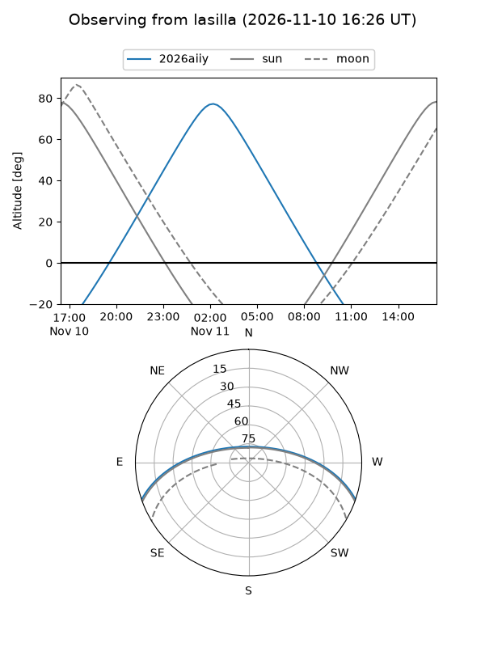
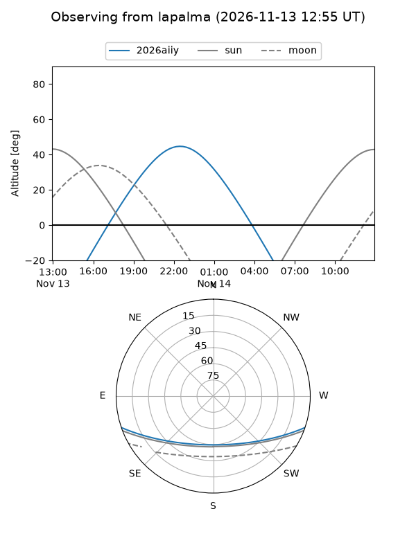
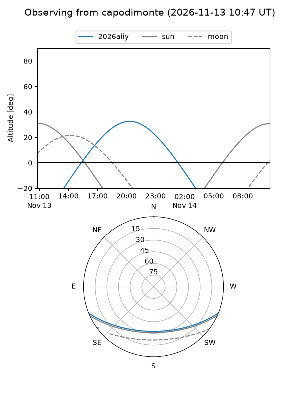
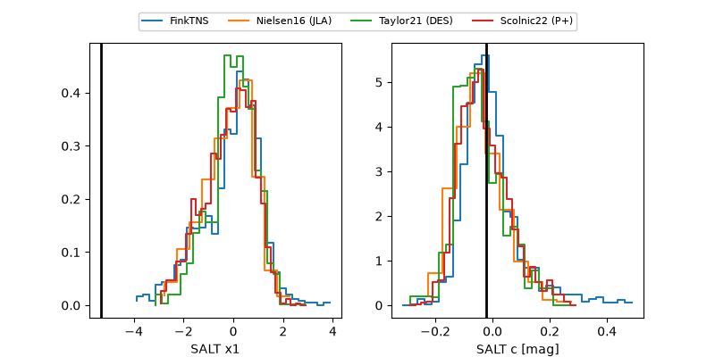

2026aiiy
Target 2026aiiy at 2026-11-11 14:47
Aliases and brokers:
FINK-ZTF: ztf.fink-portal.org/ZTF26acfqswc
Lasair-ZTF: lasair-ztf.lsst.ac.uk/objects/ZTF26acfqswc
ALeRCE-ZTF: alerce.online/object/ZTF26acfqswc
YSE-PZ: ziggy.ucolick.org/yse/transient_detail/2026aiiy
TNS name: wis-tns.org/object/2026aiiy
Direct TNS query: direct search
alt names
ZTF26acfqswc (ztf,fink_ztf)
2026aiiy (tns,yse)
Coordinates:
equatorial (ra, dec) = 11.6928,-16.67425
equatorial (HMS+DMS) = 00:46:46.26,-16:40:27.32
galactic (l, b) = (116.7931,-79.49033)
Flags:
peak dt: +1.3
Photometry:
last ztfg=19.72, ztfr=19.75
2 ztfg, 1 ztfr detections
Lightcurve
Visibility



Additional plots
